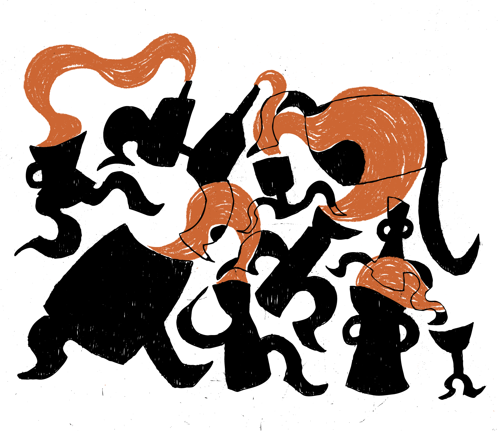
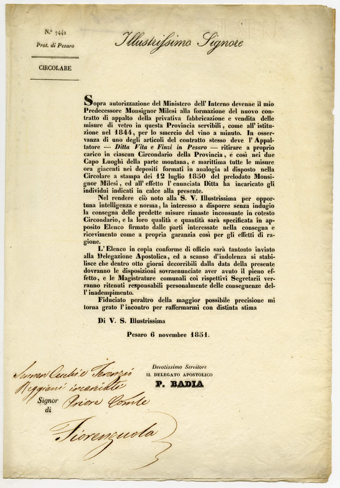
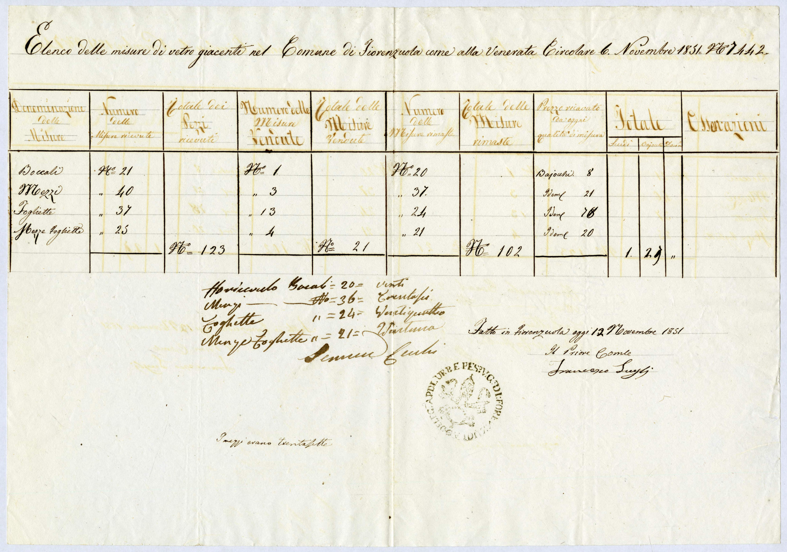
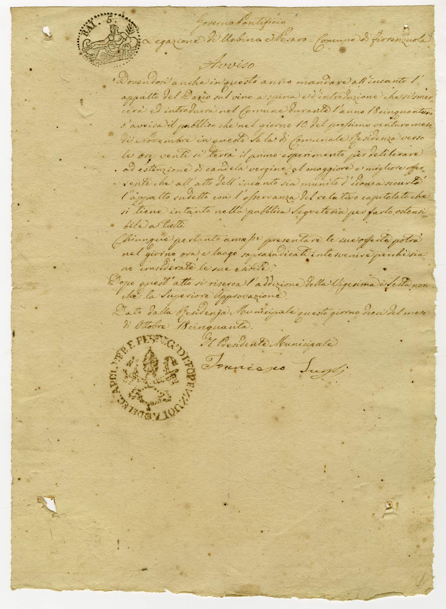
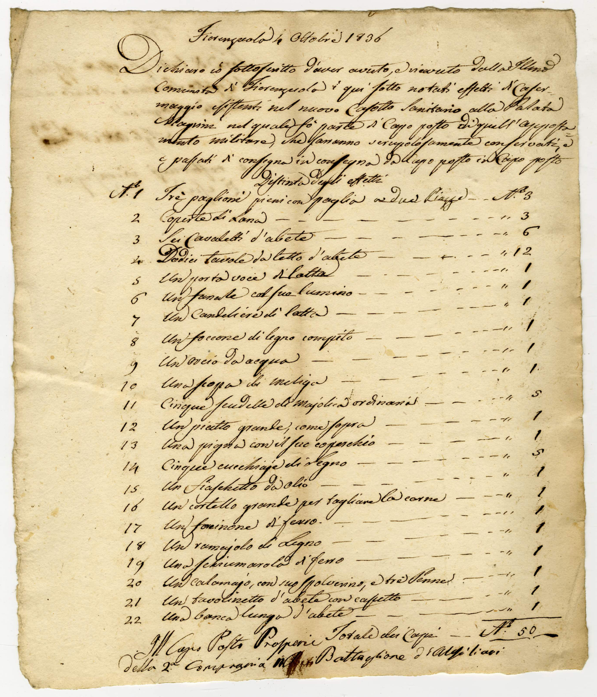
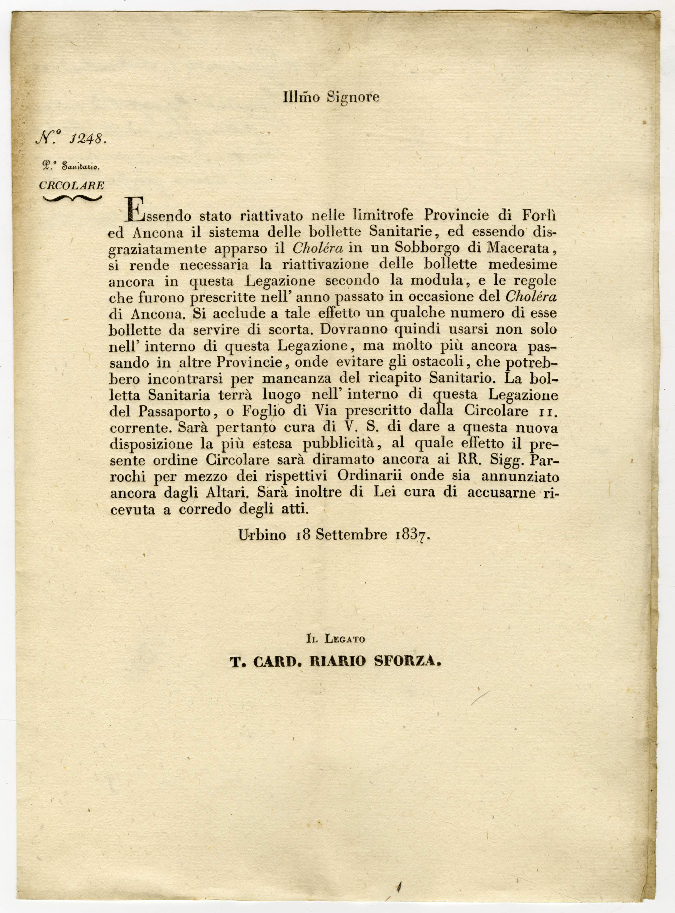
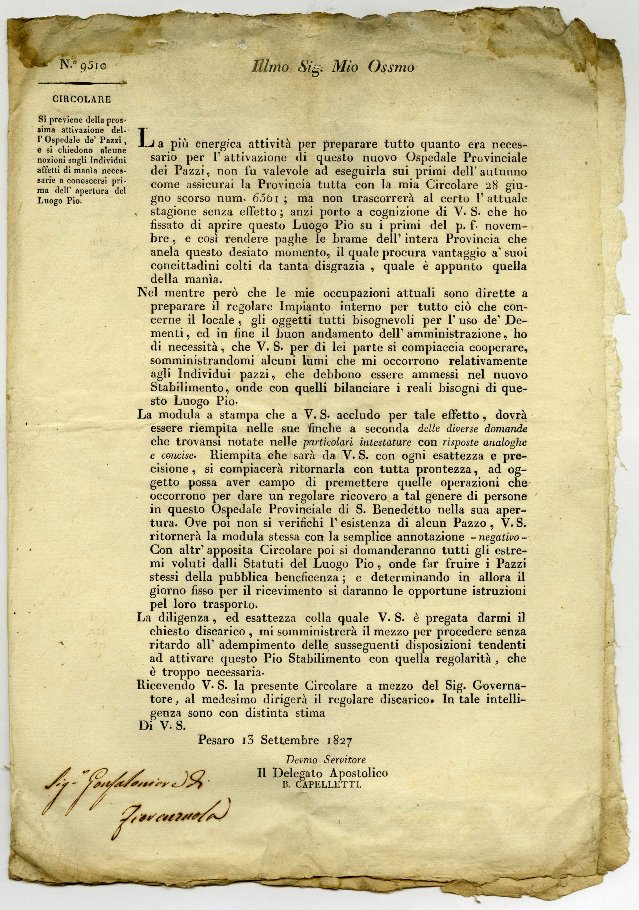
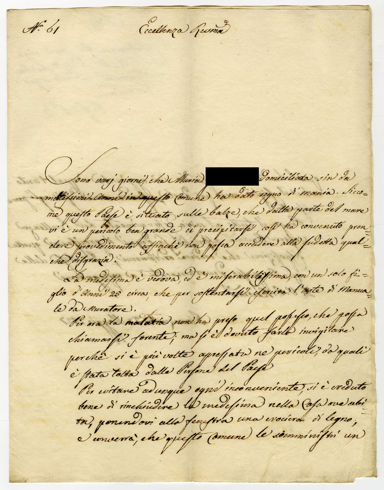
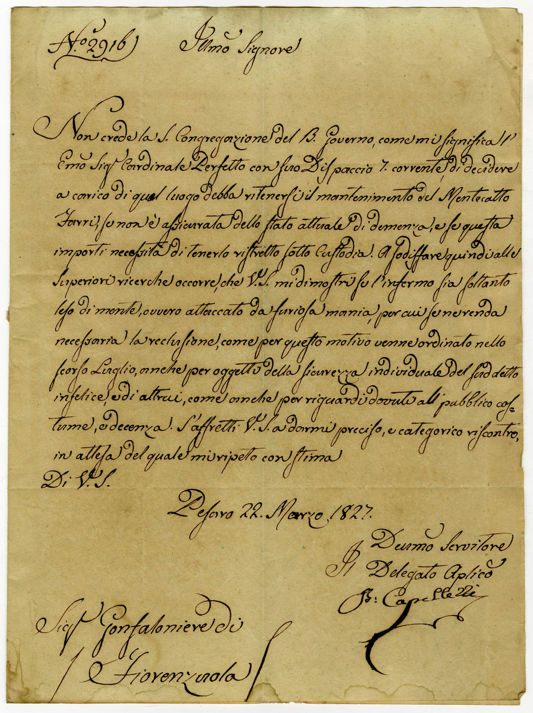

Il sito di Fiorenzuola è progettato esclusivamente per dispositivi mobile.
4.5.2024 — 29.9.2024
Dagli archivi storici comunali, i personaggi
e le storie dell’antico comune oggi soppresso,
raccontati con occhi del presente.
Un viaggio interattivo tra piazzette e strette
vie per scoprire chi eravamo.
Inizia il tour
Illustrazione di:
Giulia D'Ambrosio
Lettera al Legato pontificio nella quale il Priore di Fiorenzuola riferisce i fatti accaduti il 12 gennaio 1839, alle tre e mezza di notte. Il Brigadiere entra in casa dell’anziano Magi, dove conversavano e giocavano a carte una decina di abitanti del luogo, e vennero tutti maltrattati.
Priore fa rapporto a Sua Ecc.m Rev.ma sopra diverse stravaganze usate dal brigadiere la sera del dì 12 gennaro 1839;
“Dal contesto del presente rapporto rileverà l’Em. Vostra Rev.ma qual straordinaria misura è stata adottata nelle ispezioni domiciliari eseguite dal brigadiere de’ carabinieri comandante la colonna mobile in girata da queste parti alle ore tre e mezza circa di notte del giorno 12 gennaro andante. Egli con i suoi subalterni si recò in Fiorenzuola e, giunto sul luogo, senza usare quelle convenienze dovute avanti di entrare nelle abitazioni de’ particolari appre da se stesso la porta di casa dell’anziano sig Giambattista Magi, s’introduce nella camera dove vi era in conversazione i seguenti artieri (muratori, selcini, fabbri) soliti in tutte le sere di sabato e in quei giorni che non [lavorano] Quattro di questi giocano una partita a tresette e gli altri una partita a ciarle, vennero tutti maltrattati e in particolar modo, al padrone di casa, lacerò le carte non sazio[ …] di infastidire l’anziano G. Magi.
Sortito da quella casa, si portò … dal bettolante Pietro Majnardi nella quale osteria non vi era persona ma tuttavia fece qualche sivizia. In appresso andette nella bottega del calzolaio Marchetti Vincenzo e ad Angelo Ghiandoni, perché fumava le dette un schiaffo, e strapazzò gli altri minacciando di carcerazione.
Accade spessissimo che vengono i carabinieri in perlustrazione di notte e di giorno, né mai si ebbero dei disordini in minimo che, avendo i brigadieri, i marescialli eseguito soltanto esattamente il servizio a di loro istituto con quella precisione che convengono al loro onorevole impiego.”

Illustrazione di:
Erica Matta
Con il sistema a candela vergine, veniva dichiarato aggiudicatario il partecipante la cui offerta non venisse superata da un’altra nel tempo che occorreva per ardere tre candele accese in sequenza. Qui si trascrive la procedura per appaltare il Dazio del vino a spina.
“…quest’oggi dieci Novembre 1850 alle ore 20 italiane in questa Sala di Municipale Residente s’apre l’Incanto per deliberare ad estinzione di candela vergine l’appalto del Dazio vino a spina e d’introduzione per l’anno venturo 1851 con la condizione che l’Appaltatore debba abbonare al venditore del vino il dieci per cento che s’intende consumare per proprio uso, ben inteso però che questo diffalco dovrà succedere alloraquando il venditore non abbia altra botte a mano per conto proprio ed usi per se di quello che vende, e con tutte le altre condizioni e patti che trovansi nel relativo capitolato che ora da me Segretario infrascritto presenti l’Ill.mo Sig.r Presidente Municipale Vincenzo Bacchiani e Raffaele Giuliani Testimonj viene letto ad alta ed intellegibile voce. Terminata la lettura e accesa la candela venne pubblicato dal Balivo comunale Paolo Tornari che questo appalto si concede per la somma di scudi 77.60
In tale atto si presentò
Giacomo Lugli con la sicurtà di Luigi Franca ed offrì
scudi 80
Luigi Fattori con la sicurtà da nominarsi ed offrì
scudi 85
Giuseppe Nicolini con sicurtà da nominarsi ed offrì
scudi 86
Luigi Fattori
scudi 87
Giacomo Lugli
scudi 90
Dopo quest’offerta cessò di ardere la candela ed accesene altre due queste si estinsero totalmente vergini, per cui rimase deliberato quest’appalto del Dazio vino a spina a Giacomo Lugli con la solida sicurtà di Luigi Franca per la somma di Romani scudi 90 riservata e salva sempre l’adizione della vigesima e sesta nonché la Superiore approvazione
Atto fatto, letto e chiuso in questa Sala di Municipale Residenza”



Illustrazione di:
Emma Tonietto
Il militare Prosperi, Capo Tosto del Casotto sanitario sito sul litorale, presso la cosiddetta Palata Magrini, verbalizza quanto riceve dal Comune di Fiorenzuola.
“Dichiaro di aver ricevuto dalla Comunità di Fiorenzuola i qui sotto notati effetti di Casermaggio esistenti nel nuovo Casotto sanitario alla palata Magrini nel quale fo’ parte di capo posto di quell’appostamento militare che saranno scrupolosamente conservati da Capo posto a Capo posto.
Distinta degli effetti
3 Paglioni di paglia a due piazze
2 coperte di lana
3 cavaletti d’abete
12 tavole da letto d’abete
1 portavoce di latta*
1 fanale con suo lumino
1 candeliere di latta
1 foccone di legno compito (?)
1 orcio da acqua
1 scopa di meliga**
5 scudelle di maiolica ordinaria
1 piatto grande come sopra
1 pigna con il suo coperchio (pignatta con suo coperchio di coccio)
5 cucchiaje di legno (cucchiari di legnio)
1 fiaschetto da olio (bossolo da olio di terra)
1 cortello grande per tagliare la carne
1 forcinone di ferro
1 ramajolo di legno
1 schiumarola di legno
1 calamajo, con suo spolverino e tre penne
1 tavolinetto d’abete con cassetto
1 banca lunga d’abete
totale dei capi n.50
* in passato, tubo metallico fornito di boccagli alle estremità per trasmettere messaggi vocali da un punto a un altro, da un ambiente a un altro
**o mèlica Pianta erbacea con spighette di fiori color giallo raccolte in pannocchie (fam. Graminacee, mais?)

Illustrazione di:
Beatrice Massei
Molti gli avvisi a tema Sanità nel 1837, anno in cui, si legge in altri documenti la “Capitale è infetta ...ed è disgraziatamente apparso il Cholera in un Sobborgo di Macerata”. Gli spostamenti di uomini e animali all’interno dello Stato Pontificio era severamente controllato, a motivo della comparsa del morbo asiatico.
E’ invalsa la opinione che la Caccia delle Rondini non sia compresa tra quelle vietate … Ci è stato riferito che per tale erronea si va facendo la suddetta Caccia specialmente lungo il littorale con pregiudizio della salubrità dell’aria, che da quegli animali ne viene purgata. Ci affrettiamo pertanto a dichiarare al Pubblico, che anche la Caccia delle Rondini è compresa fra quelle proibite, e che i Contravventori anderanno soggetti alle pene…: oltre alla perdita degli strumenti di caccia, multa di scudi tra 10 e 50, eventuale risarcimento, carcerazione.
Lettera del Priore al Legato: “Ho posto persona alla Siligata in qualità di Deputato alla sorveglianza dei viaggiatori che giungono sul luogo per riconoscere se vi fossero persone provenienti da passi infetti del morbo asiatico e precettati a star sempre isolati ed al caso poter prendere quelle precauzioni prescritte dai regolamenti sanitari.”

Illustrazione di:
Stefano Zurlo
Il carteggio fra mons. Capelletti, fondatore dell’Ospedale San Benedetto, e il Gonfaloniere di Fiorenzuola fotografa un particolare spaccato di vita paesana che si inquadra nel più ampio discorso delle problematiche assistenziali del tempo, proprio nel momento in cui a quelle problematiche si cercava di porre rimedio con la costruzione del nuovo Ospedale psichiatrico.
Su istanza del Gonfaloniere per l’assistenza ad un mentecatto, il Cappelletti risponde: “… occorre quindi che V.S. mi dimostri se l’infermo sia soltanto leso di mente, ovvero attaccato da furiosa mania, per cui se ne renda necessaria la reclusione, anche per oggetto della sicurezza individuale del suddetto infelice e di altrui, come anche per riguardi dovuti al pubblico costume e decenza. S’affretti V. Sa. darmi preciso e categorico riscontro, in attesa del quale mi ripeto con stima.”
Ulteriore caso: Il Gonfaloniere al Capelletti
"…Sono vari giorni che Maria G. domiciliata sin da moltissimi anni in questo Comune ha dato segno di mania. Siccome questo Paese è situato sulle balze, che dalla parte del mare vi è un pericolo ben grande di precipitarsi, così ha convenuto prendere provvedimenti affinché non possa accadere alla suddetta qualche disgrazia. Per ora la malattia non ha preso quel possesso, che possa chiamarsi forente; ma si è dovuto farla invigilare si è più volte appressata ne pericoli, da quali è stata tolta dalle persone del Paese. Per evitare adunque ogni inconveniente, si è creduto bene di rinchiudere la medesima nella casa ove abita ponendovi alla finestra una crociera di legno. Pongo il tutto al savio discernimento dell’Eccellenza Vostra Rev.ma, affinché si degni di precisarmi disposizioni che crederà ordinarmi…"
Risponde il Capelletti: "…E mentre approvo le cautele adottate, non potendo provvedere attualmente al collocamento di tal infelice in questo nuovo Stabilimento di Mentecatti per non essere ancora in istato da porsi in attività, rendensi indispensabile che codesto Comune si dia tutto il carico per la cura e custodia di essa."



Illustrazione di:
Giulia Silipo
Francesco Girometti, di professione muratore, era salito di sua volontà sul campanile per suonare le campane, quando venne colpito da un fulmine. Il Priore espone i fatti in una lettera al Tribunale di Prima Istanza in Pesaro per sapere cosa fare. Il Tribunale risponde.
Il Priore: “Venne qui fulminato un individuo di questo comune, “UN TALE” detto Ravino, di prof muratore, mentre si era di sua volontà portato a suonar le campane, essendo state inutili tutte le cure per richiamarlo in vita, vista l’ora tarda, e visto che il cadavere rimaneva esposto alle intemperie su un tavolato del campanile, si è creduto necessario rimuoverlo di lì e collocarlo nella chiesa parrocchiale. Dipenderà dalle sagge determinazioni di VSI.ma se debba darsi sepoltura al cadavere in seguito di suo venerato riscontro”.
Il Tribunale: “Tostoché la morte del Girometti è avvenuta nel modo da V.S espostomi col suo rapporto in data d’oggi ed in conseguenza non vi è dubbio alcuno, che causa della medesima sia stata azione delittuosa, ma bensì mera disgrazia. Le significo non occorrere a questo Tribunale di assumere veruna legale ispezione…"